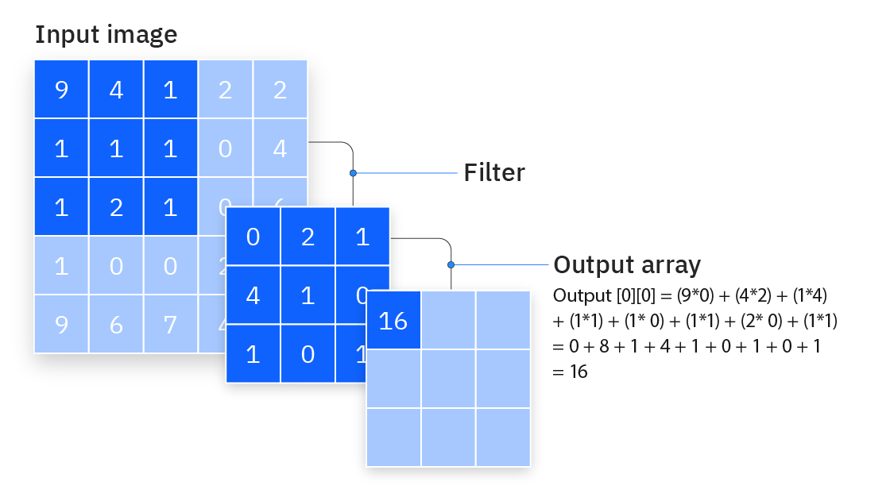

Summary
I worked in a pair with my partner in order to program a virtual car to drive through a simulated Gazebo track, avoiding obstacles and reading signs on the way!

Rules and Setup
We begin with the competition surface:
The competition consists of two main sections, the beginning "Road" section and the "Grass" section at the end. The sections both contain various obstacles traveling on pre-set paths that the user must avoid colliding with. Furthermore, both sections also contain a number of signposts which each have one or two words on them. These signposts must be captured using computer vision techniques, read with a neural network, and the words must be submitted as a string to a clue checker program in order to secure points. Points are awarded for clues read, and deducted for any navigation errors.
Technologies
ROS
ROS (Robot Operating System) is a tool that provides various libraries and features for developing robotics. ROS is comprised of a system of nodes, which are essentially modules or subprograms that each perform specfic functions, such as reading signboards, getting camera input, and so on. These nodes can communicate with each other through a system called topics. A node can create and connect to a topic, and either publish or recieve to/from that topic. Other nodes can then connect to that same topic, and read or send information themselves.
In the context of our competition, our code published our movement commands, timer starting instructions and various other data to different topics which were then read by Gazebo and the competition score tracking nodes, allowing us to move our robot and collect our points.
Here is our code at the earliest stage of development, as we were figuring out node communication:
#!/usr/bin/env python3
from __future__ import print_function
from std_msgs.msg import String
import roslib
import sys
import rospy
import cv2
from std_msgs.msg import String
from sensor_msgs.msg import Image
from cv_bridge import CvBridge, CvBridgeError
from rosgraph_msgs.msg import Clock
from geometry_msgs.msg import Twist
import numpy as np
class Signals:
def __init__(self):
self.move = rospy.Publisher("/R1/cmd_vel",Twist,queue_size=1)
self.score = rospy.Publisher("/score_tracker",String, queue_size=1)
self.clock = rospy.Subscriber("/clock",Clock, queue_size=10)
def main(args):
comms = Signals()
rospy.init_node('node', anonymous=True)
move = Twist()
move.linear.x = 0.5
rospy.sleep(1)
comms.score.publish(str("FANUM,WAGON,0,NA"))
comms.move.publish(move)
rospy.sleep(5)
comms.score.publish(str("FANUM,WAGON,-1,NA"))
try:
rospy.spin()
except KeyboardInterrupt:
print("Shutting down")
cv2.destroyAllWindows()
if __name__=='__main__':
main(sys.argv)
And here is the score tracker GUI. We gain points if the "Predicted" word from our robot matched the "Actual":
Gazebo
Gazebo is a powerful tool that allows us to simulate various robots and components in a 3D environment. Our competition is fully simulated in Gazebo, and we communicate with the simulation using ROS nodes and topics via plugins in order to simulate our camera feed, our robots motion, and more!

CV2
CV2 is a python library designed for use in computer vision and image processing! This module was used in order to process the images captured by our simulated camera so that it can be run through our CNNs to be identified accurately.
Pytorch/Keras
Keras and Pytorch are some of the largest open source libraries for implementing machine learning. In competition, we used Keras as our library to allow us to train and create our neural networks.
CNNs
A neural network is a system composed of many different "nodes" that store data. These nodes are connected together in layers, forming a network composed of data and weights. Data goes into the input layer, is processed through the weight layers, and an output comes out of the output layer. During training, the output of the neural network is compared to a correct solution, and the weights used in the network are tuned. Here is a good diagram from this article which shows this structure:
CNNs (Convolutional Neural Networks) are a type of neural network that are often used in computer vision and identification/classification tasks. These networks use matrix and tensor multiplication to learn and process data.
First, a tensor is created that stores data. For example, a 3D tensor might be created to store RGB values in an image. This tensor is then processed using a kernel/filter comprised of a matrix of weights. The dot product of this kernel and tensor is ran through some mathematical activation function which calculates the output of the node. This process is the "Convolutional" part of the CNN, and forms the Convolutional Layer.
Next, the outputs from the earlier layer are combined with various mathematical techniques to reduce the number of parameters, simplfying the computation and reducing complexity. This is known as the "Pooling Layer", and is usually done by sending forward the maximum value or the average value in each unit of data.
Lastly, this data is sent through a fully connected layer of nodes, which handles the final classification and filtering of the data, and produces the final output, usually a set of probabilities. Usually, this layer uses an activation function that ensures that outputs are normalized.
Functionality
Here, I will go over exactly how me and my partner implemented these technologies to bring our robot (named FANUMWAGON) to life using excerpts from our final report! Before we start with the technical descriptions, I just want to state that this project was one of the most challenging, but most interesting and fun experiences of my life. I am really glad to have worked on this with my excellent partner, and to have learned a ton about machine learning, computer vision, and Linux.
Driving
A driving system using proportional error feedback, or PID, was implemented, giving us stronger correction the farther off the road we were. HSV thresholds were used to apply image masks and isolate road lines, through which different move instructions were published to a cmd_vel topic based on detection cases and calculated error. This topic was read by our Gazebo simulation, and allowed us to send our movement commands. Road thresholds and logic were split between the initial pavement section and grass sections.
Camera feed was filtered for white lines residing in the bottom 65% of the screen (to avoid upcoming turns from affecting centre calculations) with contour area greater than 5000 (to insure we were picking up the lines and not any noise). The remaining contours were reduced to the x-coordinate of their centre of mass (CMx), which was then stored in a list for centre of road calculation. To find the centre of the road, we divide the CMxs into 2 groups: ones which fell on the left side of the screen vs. the right. Averaging the CMxs on each side first before taking an overall average of the left and right CMx, we get the calculated centre of the road. We can then find the difference between the centre of the road and the centre of the screen to find how far off our robot is.

This driving logic worked for the pavement, but would often fail in the grassy sections due to the noise and difficulty getting clear colour thresholds for masking. A different system is implemented here, where we retrieve the middle Y coordinate of every contour and assign it either (+) for left-side or (-) for right side. We append these coordinates to a list and based on the sign of the resulting sum, gain insight into which side has lower contours (lower = higher values = dominating sign). If a side has a lower contour, we interpret it to be seeing “less” and turn towards the side to adjust. This naturally leads the robot to ‘latch’ onto a single line and focus on clearer readings.
Signboards
To detect the clueboards as a whole, we were able to filter for the blue of the clueboard and find its contours. However, there are often multiple contours for this colour that are present that come from other boards in frame, the letters on the board, and so on. To solve this problem, we set a variable bigC to be the first contour in the array of contours produced. We can then iterate through this array, setting bigC to the current contour if its area is greater than bigC‘s current contour area. By doing this, we end up with bigC being equal to the largest contour on screen, which should be the signboard closest to the vehicle.
From this point, we can use the function cv2.approxPolyDP() in order to receive a polygonal approximation of the contour. From this polygon, we extract the vertices. The clueboard is rectangular, so we are only interested in this polygonal approximation if it has 4 vertices, and if the vertices are a certain distance apart from each other, ensuring that we are close to the board and can get a clear view. If these conditions are met, we can proceed to sort the vertices, ensuring that they are in a consistent order. This is done by finding the average x and y coordinates of the vertices, essentially finding their centroid. From here, we know that the top right vertex will be the vertex which has an x coordinate > centroid and y coordinate < centroid, and so on. Once we have our vertices sorted, we can use cv2.getPerspectiveTransform() and cv2.warpPerspective() to generate our clueboard.
To extract the letters from the clueboard, we first perform some processing on the clueboard image itself. We are only interested in the clue itself, so we can crop the image into a thin strip that only contains the clue. We can then sharpen the image by using a technique known as unsharp masking. This involves using cv2.GaussianBlur() to blur a grayscale version of our clueboard image, and then using the cv2.addWeighted() function as well as the cv2.threshold() function to output a new, sharper binary image. We can then use this binary image to draw the contours of the letters.
Once we have the contours, getting the individual letters can be done fairly easily. First, we can use cv2.boundingRect() to get the bounding box of each letter. We can then sort the list of contours by the x-coordinate of the top left point of their bounding box. This ensures that our letters will be in order from left to right. After that, we can simply crop the image based on the coordinates of the bounding box, giving us a letter.
These letters will then be ran through our CNN.
CNN
To generate data, we used a plate.generator.py script located in the competition repo in order to generate sample clueboards. The same base plate and font was used to generate fake clueboards, each with a single character, varied via datagen=ImageDataGenerator(rotation_range=0, zoom_range=0.001, brightness_range=[0.4, 0.5]) and encoded via oneHot vectors that are stored pairwise to the image matrices. A random blur of range (8,12) was applied via cv2.blur and the image was spliced to contain only the letter. cv2.GaussianBlur(img,(0,0),3) is applied alongside the standard processing described in Letter Extraction to get the appropriate contours in the spliced image. This is then repeated 50 times per character (letters + digits [0,9]) to get an even distribution of varied training data.
Once the CNN has been trained we have our model summary, training graphs, and confusion matrix as follows:
Model: "sequential"
_________________________________________________________________
Layer (type) Output Shape Param #
=================================================================
conv2d (Conv2D) (None, 98, 37, 32) 320
max_pooling2d (MaxPooling2D (None, 49, 18, 32) 0
)
conv2d_1 (Conv2D) (None, 47, 16, 64) 18496
max_pooling2d_1 (MaxPooling (None, 23, 8, 64) 0
2D)
conv2d_2 (Conv2D) (None, 21, 6, 128) 73856
max_pooling2d_2 (MaxPooling (None, 10, 3, 128) 0
2D)
conv2d_3 (Conv2D) (None, 8, 1, 128) 147584
flatten (Flatten) (None, 1024) 0
dropout (Dropout) (None, 1024) 0
dense (Dense) (None, 512) 524800
dense_1 (Dense) (None, 36) 18468
=================================================================
Total params: 783,524
Trainable params: 783,524
Non-trainable params: 0
_________________________________________________________________

Here is a snippet of the code used to train our model using the Keras library. The full code is in our python notebook.
# defining the model
conv_model = models.Sequential()
conv_model.add(layers.Conv2D(32,(3,3),activation='relu', input_shape=(100, 39, 1)))
conv_model.add(layers.MaxPooling2D((2,2)))
conv_model.add(layers.Conv2D(64,(3,3), activation='relu'))
conv_model.add(layers.MaxPooling2D((2,2)))
conv_model.add(layers.Conv2D(128,(3,3), activation='relu'))
conv_model.add(layers.MaxPooling2D((2,2)))
conv_model.add(layers.Conv2D(128,(3,3), activation='relu'))
conv_model.add(layers.Flatten())
conv_model.add(layers.Dropout(0.5))
conv_model.add(layers.Dense(512, activation='relu'))
conv_model.add(layers.Dense(36, activation='softmax'))
# use categorical cross entropy function for multiple classes
LEARNING_RATE = 1e-4
conv_model.compile(loss='categorical_crossentropy', optimizer=optimizers.RMSprop(learning_rate=LEARNING_RATE),metrics=['acc'])
reset_weights(conv_model)
# training the model
history_conv = conv_model.fit(np.array(Xdata), np.array(Ydata),validation_split=0.2, epochs=80, batch_size=16)
conv_model.summary()
The saved model was loaded into the same python script as the other implementations and would predict a letter every time an extracted clueboard image was fed. These guesses would continue to update until the clueboard was no longer seen, after which, the final guess was published to the score_tracker topic.
Obstacles
Obstacle detection was handled by looking for movement. After stopping the robot at a point of interest, we are able to compare the current frame of the camera with the previous frame using subtraction. By subtracting the current frame from the previous frame (using the cv2.absdiff() function), the pixels that have not changed will be black, while the pixels that have changed will keep some colour.
We can then apply a binary mask to this image, giving us a fully black and white result. From the binary image, we can convert the image into a numPy array using the np.toArr() function, which makes it very easy to count the number of white pixels through the use of the np.count_nonzero() function. When we find a count above a certain number of pixels, we can be confident that the motion is caused by the closest object, and not by noise or an object that is further away (such as the truck in the earlier image).
We know the the first obstacle we will interact with is the pedestrian. The crosswalk with the pedestrian is marked by a bright red line. We were able to filter for that line and find its contours, allowing us to track its position. When the contour reaches some size threshold, we can recognize that we are very close to the crosswalk, allowing us to stop the robot and run our motion detection code.
We chose our pixel threshold to be 2000, as this value is higher than the pixel count created by the motion of the truck in the background, while still being low enough for the pedestrian motion to consistently reach. We can start our car’s motion as soon as pedestrian motion is detected, as the pedestrian moves fast enough that we do not run into it. Lastly, we use a boolean as a condition to stop at the crosswalk, which is flipped after detection is complete. This ensures that we only check the code for the crosswalk once, without repeating it on the other side of the crossing.
The truck lacks a line identifier on the road, so we instead stop the vehicle a short amount of time after seeing the third clueboard in order to run motion detection. This is essentially the same as the pedestrian code, however there was room for an optimization; since the truck is constantly moving, there will always be white pixels that follow the truck, meaning there is no uncertainty about its current location. This allows us to either go when the truck passes close by (its pixel count > 1400), OR when the truck is very far, (pixel count < 60) in order to safely make it through.
Lastly, we have Baby Yoda. Unfortunately, we had run out of time at this point to fully drive through Yoda's area, and thus did not create a way to deal with him. However, it would essentially work the same way as the truck, albeit with a smaller threshold.
Results
Overall, we managed to achieve 40 points in the competition as a whole, which was an impressive result and ranked us within the top 3 robots at competition. Our robot performed its parts consistently and accurately. However, due to time constraints, we needed our robot to use the teleport option to skip exiting the roundabout and baby yoda, which led to losing points. While our robot performed well, we were left a little frustrated that we weren’t able to give our robot the tools to get full points in time for the competition. However, we were still ultimately pleased with our robot's performance, and happy with the knowledge and experience we received from working on the project.
To improve our robot further, we would want to finish developing and tuning our PID to drive out of the roundabout, as well as implement mountain driving and tracking Yoda. These were some very interesting topics that we really wanted to do, but ran out of time.
Improvements to make in our work were to spend less time tuning before building out all the components we needed. We spent too long developing tunnel vision on components we had, such as PID, and trying to optimize them, that we ended up losing track of the components that still needed to be developed. We need to be more cautious of falling into these kinds of traps, and instead focus on making sure all components are present and functioning before we try to optimize.
Thank you to Emily Xue for being a great partner on this project!